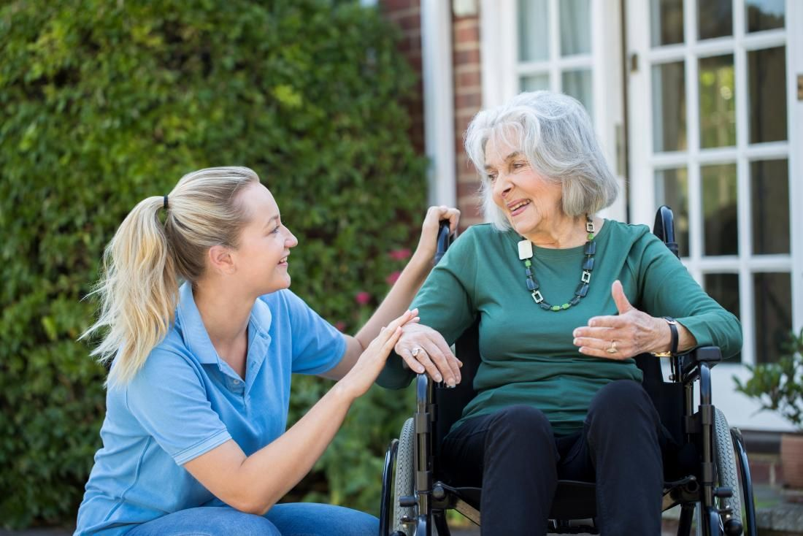

What We Can Help You With:
Companion Care
For most seniors, a companion provides the support they need for a wide range of basic caregiving tasks...
Learn More
Companion care is a type of in-home care service that provides essential assistance to the elderly and disabled adults. Care will typically include several ways to make daily living easier and safer for the care recipient. For instance, a caregiver might perform errands, such as grocery shopping or picking up medications, on behalf of a senior. At other times, caregivers will plan and prepare regular meals, perform light housekeeping duties and offer medication reminders. This type of elder care is also designed to improve quality of life in other ways. Caregivers act as partners for favorite hobbies and activities, accompany clients to appointments and social outings, and engage in friendly conversation with clients. These activities can be a lifeline for socially isolated seniors. Social isolation has been shown to dramatically increase the risk of health complications and mortality in seniors. Companion caregiving provides isolated seniors with social interaction and regular companionship, ending the cycle of senior isolation
Personal Care
If your loved one has advanced care needs, personal care may be the right choice...
Learn More
Personal care is one of the most common types of in-home care. Generally, this type of care is meant for individuals with chronic health conditions, physical disabilities, or difficulties with strength, coordination, and mobility. Care will typically include a combination of tasks and activities, which are designed to ensure the individual's safety, comfort, and well-being. One of the most important aspects of personal home care (or private care) is assistance with activities of daily living, also known as ADLs. These activities include things like dressing, personal grooming, bathing, and toileting. Personal caregivers have the skills and expertise required to assist with these tasks, as well as similar tasks such as mobility and transfer assistance. Personal caregivers can offer a helping hand with several other tasks, including assistance with errands, meal preparation, light housekeeping, medication reminders, and other routines activities. Our caregivers also provide individuals with companionship and conversation, helping reduce the risks of senior isolation.

specialized Home Care
If your loved one needs distinct care, we offer specialized home care services...
Learn More
We offer specialized home care services through our Life Care Navigation program. If your loved one needs distinct care, we will combine these specialized services with our traditional home care to develop a personalized plan.
Light Housekeeping
Light housekeeping includes tasks such as dusting open surfaces, sweeping and mopping floors...
Learn More
Light housekeeping includes tasks such as dusting open surfaces, sweeping and mopping floors (damp mops – small areas and hard surface floors), vacuuming around furniture, wiping down counters, washing and putting dishes away, cleaning bathrooms and kitchens, taking out the trash, changing sheets and making the bed.